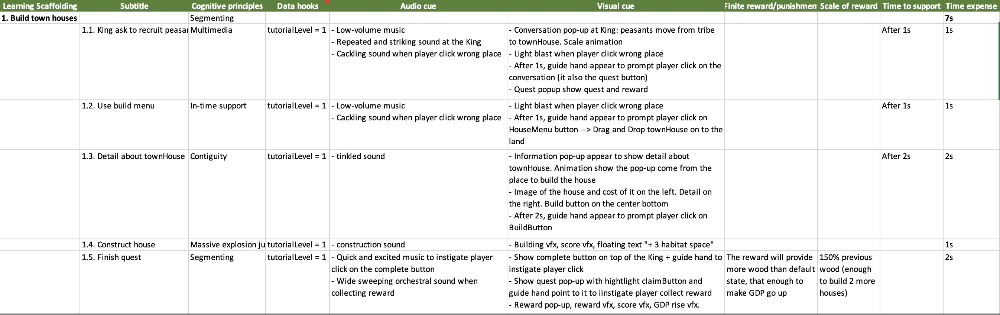

GENERAL INFORMATION
Jumpee Island, an individual project that combines the principles of reinforcement learning NPCs with the complexity of a turn-based game enriched with challenging puzzles, akin to a game of chess. The core objective of the game is to raise your island while safeguarding it from other players' invasions. In the backdrop, Unity Game Services serve as the backend solution to deliver LiveOps to players, adding an extra layer of dynamic engagement to this unique gaming experience.
- Github: Jumpee Island github
Demo video: Jumpee Island video
MY CONTRIBUTION
Game programmer: Train reinforcement learning models to control NPCs; gameplay programming; and setting up LiveOps system based on Unity Game Services.
Game economics: Design game economy based on economic principles; calculate and balance between in-game rewards and expensive; motivation and feeling design
Game monetization: Game analytics using Unity Game Services; game monetization planning
Game designer:> Gameplay and game mechanic design; level design; character design.
Technical Artist: Arrange lighting sources and handle lighting for game levels; design and implement particle system; feedback system design.
WHAT I TOOK AWAY
Tutorial system design
It is clear from this tough industry that if any new game wants to attract players and set itself out from other games, it must showcase almost every its highlight features and then wish the user to engage in these deliveries within the first 2 minutes (IQ, 2017). This conclusion comes from the consumption behaviors of people which set the demand to do more things that make them happy as the top priority when making a buying decision (Stankovic , 2021). The challenge becomes far more difficult when players first time hit the gameplay and have no idea how to get immersive with the game. As a result, a game with a good design tutorial system that rapidly rides play-ers to its most precious values might earn the highest proportion to be a winner in the game industry (Whiittee, 2014). Tutorials, the very first touch point between the game and gamers, along with enemy spawners contribute crucial materials to keep the game balance and ignite gamer’s curiosity reminding them to return to the game and explore its contents more. The game’s tutorial system uses sensors and a GOAP system to analyze situations at the time before deciding which tutorial will be used to help players who get stuck in a certain challenge for too long.
Tutorial Design
Puzzle mechanics
Puzzle mechanics can add an extra layer of challenge and depth to RTS games. They can also force players to think outside the box and come up with creative solutions to problems. This can lead to more exciting and engaging gameplay. The puzzle is incor-porated into the level design of this game in a way that players need to solve the puz-zle to get through stages and defeat the boss if they want to unlock new characters. In addition, the game provides a wide range of unit abilities that give players various options to complete the puzzle and ensure the game go with high expandability.
Level Concept Design
Level Design
Reinforcement learning model as NPCs
Reinforcement learning (RL) has the potential to be a powerful tool for creating NPCs in RTS games that are more intelligent and challenging to play against. There is some financial benefit when using RL in the game industry: Reduced development time and cost: RL can be used to create NPCs that are more complex and intelligent without having to manually write code for every possible be-havior. This can save developers time and money. Break the first stage dilemma: Reinforcement learning (RL) can provide several finan-cial benefits when applied to multiplayer mobile games, especially in the first stage of the business when the game is stuck in the dilemma between attracting more players to collect more content or creating more content to attract more players. When there are many ways to use RL as a content creator, RL in this game mimics player strategy and plays the game in the opposite faction as a real player. This RL usability provides a perfect solution not only to allow players to directly jump into a game without any long waiting from lack of players situation but also to lower the marketing budget in the first stage when the game is quite new and heavily con-sumes money for marketing campaigns to attract new players as fast as possible
Play around with Reinforcement Learning NPCs
LiveOps
LiveOps tools are effective in increasing user retention rates for game projects. They create a sense of competition, habit formation, progression, and engagement. These tools also enhance communication and personalization, keeping players informed and motivated to continue their gaming journey. A well-executed LiveOps strategy can significantly improve a game's player retention, leading to a more successful and sus-tainable game project. In this game, leaderboards, daily rewards, battle passes, and mailboxes are the main LiveOps tools.
-
Leaderboards: Leaderboards can motivate players to play the game more often and to improve their skills to rank higher. This can lead to increased player engagement and retention.
-
Daily rewards: Daily rewards can give players an incentive to log in to the game every day. This can help to keep players engaged and prevent them from churning. Battle passes: Battle passes can give players a sense of progression and reward them for playing the game regularly. The battle bass in this game is placed right before the player presses the battle button and gets the player's attention to play the game reg-ularly to collect more rewards.
-
Mailbox:: The mailbox can be used to communicate with players and to send them personal-ized messages and rewards. One important feature of the mailbox in Jumpee Island is to announce visitors who travel to the island and try to collect treasure from putting down players’ buildings.
© BinhLai, 2021